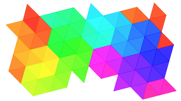

Product lead turned software developer, I'm a passionate problem-solver with a knack for geometry and drone
flying. My code preference is readable, performant, and concise, in that order. I use Django/React for Fullstack
and Python for data science.
This website is intended for professional use as my portfolio, but my design
intention is for it to be an enjoyable experience for most.

about mul·ti·fac·et·ed
Multifaceted is both, my portfolio and a web art installation. As an art piece it aims to represent the
multi-dimensional nature of people. It leverages an interactive tessellate as a discovery tool to explore the
different facets of myself.
version 0.1.0 -- downloadable image
about me
The story of how I chose web development as a career is a long and winded one, but in short,
my first digital love was 3D design until I stumbled upon a powerful web design workflow, back in 2005.
Combined, the story and the workflow, took me through a beautiful journey where I got to either study, work
directly in, or be exposed to:
Industry research and competition analysis
Art direction and Graphic Design
Photography production and post-production
Video production and post-production
Magazine production and printing
Usablity studies and heuristics
Data science
UI and UX Design
SEO
Front-end Development
Entrepreneurship
3D Animation and printing
Arriving to my final destination, code.
💼
Portfolio
This portfolio showcases my latest projects as a Javascript and Python developer. For other web product lead
or web production related pieces, please check my resume.
Leftovers -- Work in progress
Web app to fight food waste with an AI twist.
Take a picture of your leftovers and track them overtime, or make them public
to share them with others. The posting workflow includes a machine learning model to predict the type of
dish being uploaded.
Technologies
Languages: Python, Javascript
Machine Learning: Tensorflow JS
UI Library: React ⚛
Web Framework: Django
API Toolkit: Django REST Framework
Database: PostgreSQL
App platform: Heroku
All The Feelz
Emotion wheel web app
In 1980 Robert Plutchik proposed a psychoevolutionary classification approach for general emotional
responses. This web app is a way to levereage that theory to classify and record how you feel overtime.
Technologies
Languages: Python, Javascript
UI Library: Vue
Web Framework: Django
Database: PostgreSQL
App platform: Divio Cloud
Synesthesia
Art installation to emulate synesthesia
An art gallery featuring an art installation component to emulate a synesthetic experience of hearing
color. Future work will include more elaborate synth transformations and better styling.
Technologies
Languages: Javascript
UI Library: React ⚛
API: The Metropolitan Art Museum API
App platform: Heroku
DOM Invaders
Space invaders emulator using Vanilla JS.
This project is purely written in HTML, CSS and Vanilla JS. The only assets used is a font. I wrote a
python script to create the game sprites. It takes as an input a reference image and outputs the
corresponding CSS code. * Doesn't work on mobile devices, yet. ** 🐭 mouse wheel to move the ship, click to shoot.